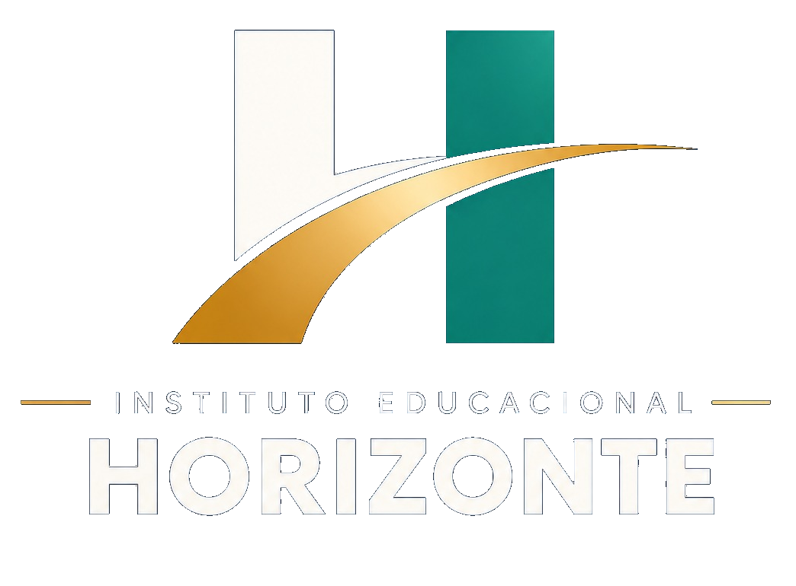

100% EAD · onde você estiver
Sua experiência pode levar você mais longe.
Cursos técnicos por competência e pós-graduação para transformar conhecimento em novos caminhos profissionais.
Instituto Educacional Horizonte
Conhecimento que reconhece sua trajetória.
O Horizonte reúne formação técnica por competência e pós-graduação em uma experiência totalmente online — feita para chegar até você, onde estiver.
Uma proposta direta para quem deseja dar valor ao que já construiu e seguir em movimento na vida profissional.
- Modalidade
- 100% EAD
- Formações
- Técnico + Pós
- Alcance
- Onde você estiver
Formações
Do caminho percorrido ao próximo passo.
Um caminho para transformar experiência em profissão e ampliar possibilidades no mercado de trabalho.
Formação para quem busca aprofundar conhecimentos e construir novos horizontes para a carreira.
Consulte a oferta atual de cursos e os detalhes de cada formação diretamente no canal oficial do Instituto.
A experiência Horizonte
Formação em movimento.
No seu tempo, no seu lugar.
-
01
Onde você estiver
A modalidade 100% EAD aproxima a formação da sua rotina.
-
02
Experiência com direção
Seu repertório profissional como ponto de partida para seguir adiante.
-
03
Novos caminhos
Formação técnica ou pós-graduação para a próxima etapa da sua jornada.
Aprender também é avançar
Formação que acompanha a vida real.
Conhecimento aplicado, autonomia para estudar e novos caminhos para quem quer continuar avançando.
Transforme experiência em profissão.
— Comunicação oficial do Instituto
Seu próximo horizonte
Vamos conversar sobre a sua formação?
Conheça a oferta atual de cursos técnicos por competência e pós-graduação pelo perfil oficial do Instituto.
Falar com o Instituto